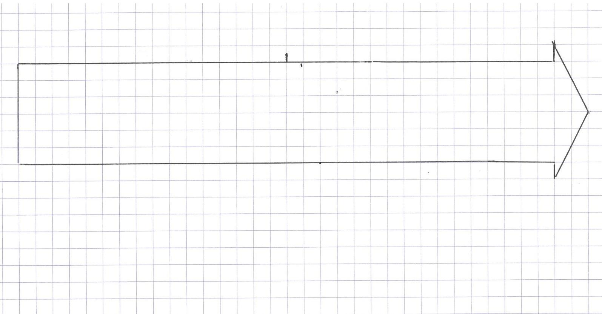
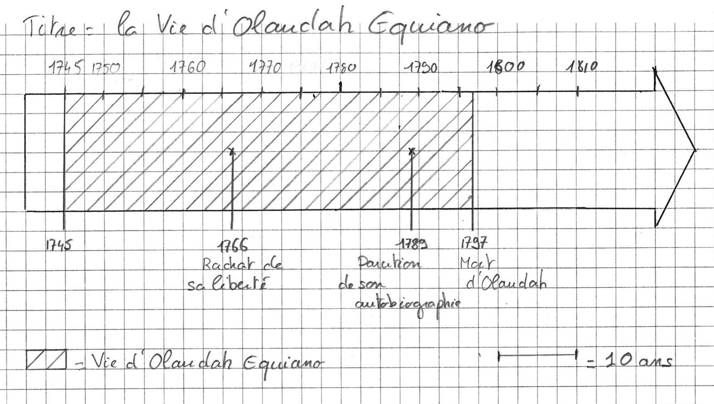
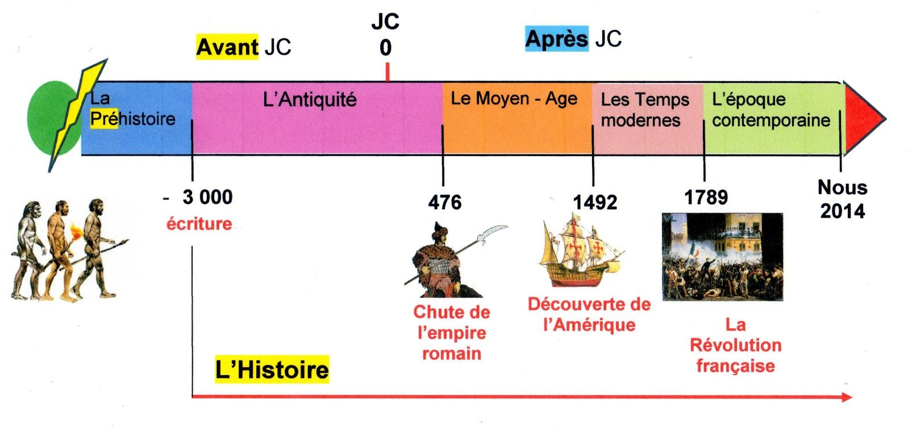
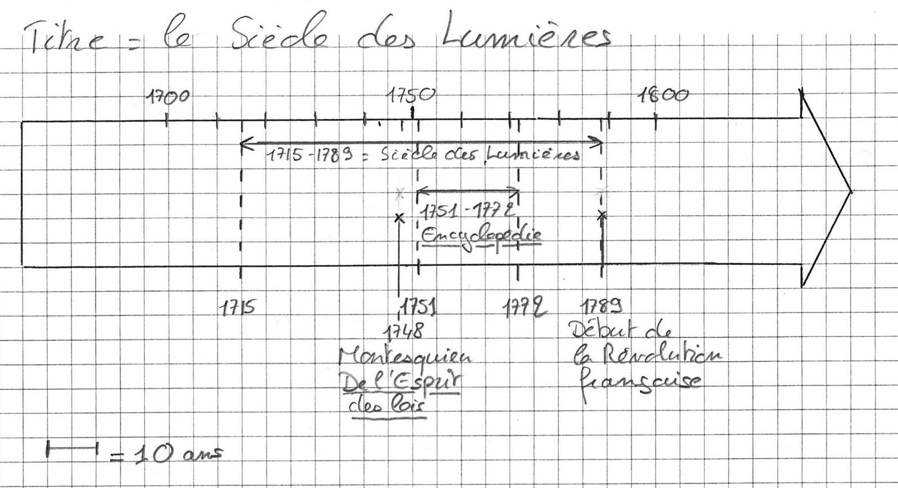
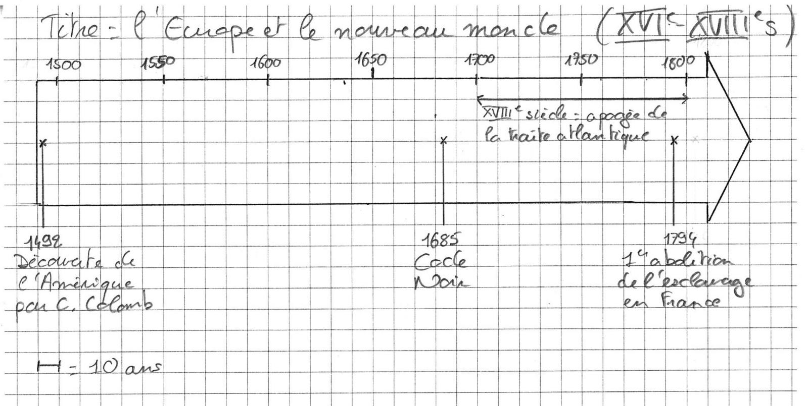
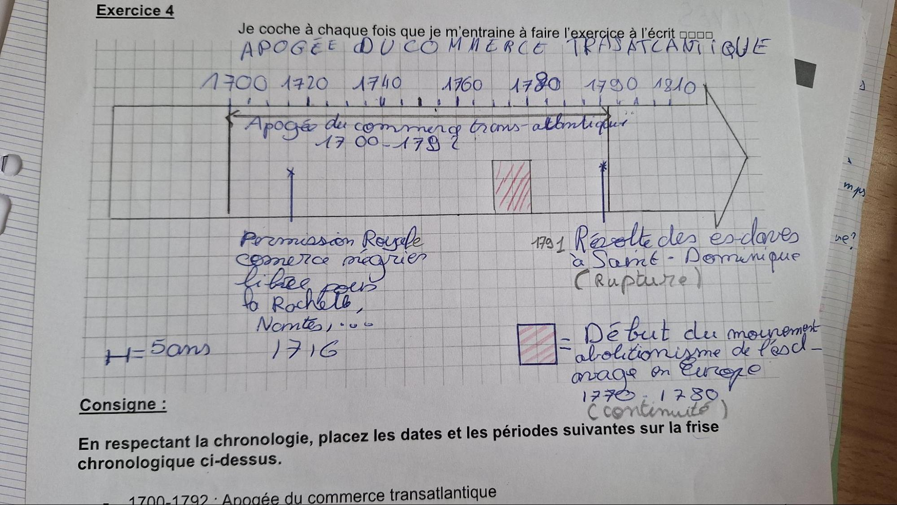

L'exemple corrigé
Consigne :
En respectant la chronologie, placez les dates et les périodes suivantes sur la frise chronologique ci-dessus.
- 1745-1797 : Vie d’Olaudah Equiano
- 1789 : Olaudah Equiano publie son autobiographie « Ma véridique histoire » pour dénoncer l’esclavage.
- 1797 : Mort d’Olaudah Equiano
- 1766 : Olaudah Equiano achète sa liberté
Indiquez une rupture et une continuité, visible dans cette chronologie.
Critères :

Voir la correctionMasquer la correction

Rappel

Pour calculer le siècle qui correspond à une date, on prend le nombre des centaines (ou milliers + centaines) et on rajoute 1.
Une rupture correspond à un grand changement dans l’histoire ou dans la vie des personnes. On parle aussi de date-charnière. Le passage de l’école primaire au collège est une rupture dans votre scolarité.
Au contraire, une continuité, c’est quand rien ne change. Quand vous passez de 5e en 4e, vous êtes dans la continuité.
Exercices d’entrainement
Consigne :
En respectant la chronologie, placez les dates et les périodes suivantes sur la frise chronologique ci-dessus. Puis indiquez une rupture et une continuité, visible dans cette chronologie.
S'entraîner
Exercice 1
- 1715-1789 : le Siècle des Lumières
- 1751-1772 : publication de l’Encyclopédie
- 1789 : début de la Révolution française
- 1748 : Montesquieu publie De l’esprit et des lois.
Voir la correctionMasquer la correction
Exercice 1

Exercice 2
- 1492 : Découverte de l’Amérique par Christophe Colomb
- 1700-1799 : apogée de la traite Atlantique (12 millions d’esclaves transportés).
- 1794 : 1ère abolition de l’esclavage en France
- 1685 : Premier édit du Code Noir
Voir la correctionMasquer la correction
Exercice 2

Exercice 3
- 1643-1715 : Règne de Louis XIV
- 1681 : Installation dans le château de Versailles
- 1610-1643 : Règne de Louis XIII
- 1614-1715 : Renforcement de l’absolutisme
Voir la correctionMasquer la correction
Exercice 3

Exercice 4
- 1700-1792 : Apogée du commerce transatlantique
- 1716 : Permission royale : commerce négrier libre pour La Rochelle, Nantes, Rouen et Bordeaux.
- 1770-1780 : Début du mouvement pour l’abolition de l’esclavage en Europe
- 1791 : Révolte des esclaves à Saint-Domingue.
Exercices d’entrainement